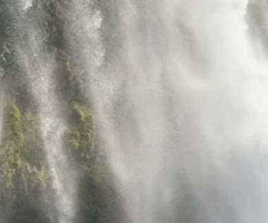

质感卡片
每张参考图做成一张卡片：不画具体的东西，但留住它的渐变、光和质感。玻璃参照苹果的做法用代码现算——底下是一层发光的渐变，上面的玻璃按厚薄折射、起雾、分出色边，边缘有反光和高光；卡片上的字压在一块液态玻璃上。
鼠标移到卡片上就是光源：高光、反光、玻璃边上的亮线都会跟着走。

- 渐变
- 苔绿和岩石的暗底，从左下的暗处往右上的太阳一路变亮，底部被水雾抬成乳白
- 光感
- 逆光：水幕薄处透出后面的苔绿，厚处发白发亮；雾里斜着几道光，水滴闪着往下走
- 质感
- 一缕缕竖向的水幕往下流，按厚薄折射、起雾，越往下越散成雾

- 渐变
- 底下是另外九张卡片的主色排成的竖条，每条上浅下深
- 光感
- 透镜边上一圈亮线，迎光那侧最亮，对面一道弱的内反光，底下落一片淡影
- 质感
- 上面是清透的液态透镜（跟着鼠标走），边缘把色条压弯、分出色边；下面一块磨砂把色条糊成柔和的过渡

- 渐变
- 洋红从深梅到亮粉，褶子背光的一面转紫
- 光感
- 像在影棚里拍：一块大柔光箱、一条灯管映在褶上，拉出长长的反光；鼠标是点光
- 质感
- 皱起来的镀铝膜，折痕处是硬的；黑标签是一块深色的亮面玻璃

- 渐变
- 近黑的夜空里一小块冷白，往外一圈圈暗下去，带一点淡黄和淡紫
- 光感
- 月光透过薄云被打散成光晕，云边镶一道亮边；月亮跟着鼠标走
- 质感
- 一条条横向的云像磨砂玻璃条，慢慢往左漂，厚处糊、薄处透

- 渐变
- 两边钴蓝、中间暖灰，几点暖黄的灯
- 光感
- 每根玻璃柱上一道竖向高光，排成一列；柱缝暗下去
- 质感
- 长虹玻璃：十三根竖柱把后面的颜色折成一级一级，柱顶从中间往两边一级级降，是石塔的序列

- 渐变
- 同一个橙：中心亮杏色，往外到橙、到砖红，像从里面透出来的光
- 光感
- 每颗冰粒是一个小透镜，里面倒映一小块橙光，顶上一个奶白高光，背光那侧透出暖光
- 质感
- 冰粒沿着挖痕的同心弧一道道排开，粒和粒之间是暗下去的碎冰

- 渐变
- 倾斜的地层：浅灰、土黄、橄榄、亮苔绿，炭黑压底
- 光感
- 每层上沿一道斜面接住左上来的光，下面落一道浅影
- 质感
- 一片片叠起来的有色玻璃，有的磨砂、有的清透，透出草纤维和苔藓团

- 渐变
- 灰蓝的天往下变暖白，主虹和反过来的副虹都是粉彩
- 光感
- 主虹里面比外面亮，两道虹之间一条暗带；雾里有几道斜光
- 质感
- 雾是一层层飘着的磨砂，把虹糊开又露出来，没有硬边

- 渐变
- 上面从深蓝到淡紫，到地平线一道暖橙；下面是同一片天倒过来，偏冷偏暗
- 光感
- 太阳贴着地平线，水面上一条碎金的光路，越近越散
- 质感
- 水面是一层会动的玻璃：越远的水纹越细，把倒影揉碎

- 渐变
- 中间乳白的浅青，往外到湖蓝、到深青
- 光感
- 水面把光聚成一张亮网落在底上，高光和天光浮在水面
- 质感
- 绕着漩涡流动的水面，乳白的水丝顺着流向走；漩涡跟着鼠标